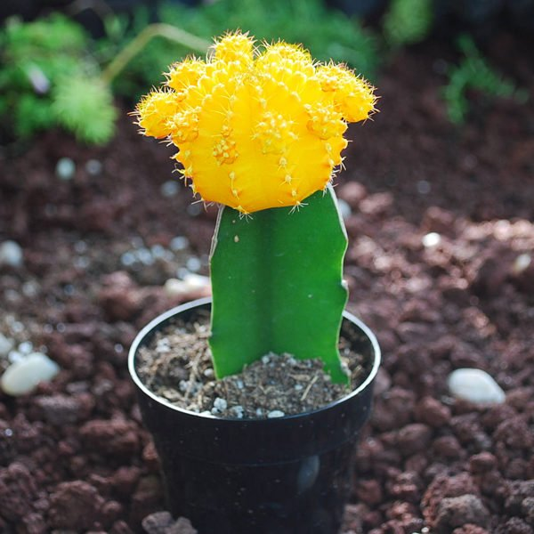

Moon Cactus (Gymnocalycium mihanovichii graft)

Description
The Moon Cactus is a unique grafted plant highly popular for its brightly coloured globular top (the scion), which comes in shades of red, pink, yellow, orange, or even dark purple. This colourful part is a mutated *Gymnocalycium mihanovichii* that lacks chlorophyll and thus cannot survive on its own roots. It is grafted onto a compatible green cactus rootstock, typically a triangular *Hylocereus* cactus, which provides the necessary nutrients and photosynthesis for the entire plant.
Care Instructions
- Light: Needs bright, indirect light. The green rootstock needs light, but the colourful top scion can scorch in harsh, direct sun.
- Water: Water thoroughly only when the soil is completely dry. Allow excess water to drain fully. Water the base, not the top. Reduce watering significantly in winter.
- Soil: Requires a very well-draining cactus or succulent mix. Ensure pot has drainage holes.
- Temperature: Prefers warm temperatures, 18-27°C (65-80°F). Protect from frost.
- Humidity: Average household humidity is fine.
- Fertilizer: Feed sparingly (approx. once a month) during spring/summer with diluted cactus fertilizer. Do not fertilize in fall/winter.
Fun Facts
- Grafted Nature: A composite plant; the colourful top cannot live independently.
- Origin: *Gymnocalycium* is native to South America; colourful mutants often developed in Asia. *Hylocereus* rootstock is native to Central/South America.
- Common Names: Hibotan Cactus, Ruby Ball Cactus (for red types).
- Lifespan: Often shorter-lived (a few years) than non-grafted cacti due to differing growth rates or graft failure.
Toxicity
Generally considered non-toxic to humans, cats, and dogs. However, the spines can cause physical injury, so handle with care.